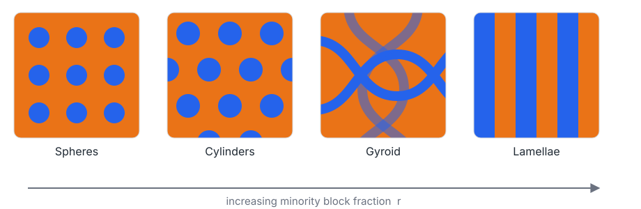

A taxonomy of separation
From Flory–Huggins to non-local gradients
CalcVarNL Meeting 2026 · Radboud University
July 6, 2026
Why does the CalcVar community exist?
- Collaboration
- Friends
- De Giorgi
- Career
- Roermond
- Fun
- Italians 😈
The real reason: the Modica–Mortola functional.
The Modica–Mortola functional
\[ F_\eps(u) = \int_\Omega \big[\, W(u) + \eps^2\,|\nabla u|^2 \,\big]\,\dd x \]
with a double-well potential \(W:\R\to[0,+\infty)\).
Ubiquitous in mathematical physics:
- Cahn–Hilliard / Allen–Cahn
- Ginzburg–Landau
- Mumford–Shah
But why this energy? \(\rightsquigarrow\) thermodynamics.
Energy minimization
The principle of least stationary action.
Translated to thermodynamics, it minimizes the
Gibbs free energy
\[ \Fmix = \Hmix - T\,\Smix \qquad (\text{constant } P, T). \]
| fix pressure | fix volume | |
|---|---|---|
| experimentally | good | bad |
| mathematically | bad | good |
\(\Longrightarrow\) work with the Helmholtz free energy.
Helmholtz free energy
\[ \Fmix = \Umix - T\,\Smix \qquad (\text{constant } V, T). \]
Incompressibility gives \(\Delta V = 0\); since \(\Hmix = \Umix + P\,\Delta V\),
\[ \Fmix = \Hmix = \Delta G. \quad\checkmark \]
Roadmap — define the lattice → define the interactions → compute \(\Fmix\) → win.
The lattice model
\(\Omega\subset\R^d\) bounded, connected, Lipschitz. For \(\delta>0\), \[ \Ldelta := \delta\Z^d \cap \Omega, \qquad N=\#\Ldelta \approx |\Omega|/\delta^d. \]
Binary mixture \(A,B\). Configuration \[ \sigma:\Ldelta\to\{0,1\}, \qquad \sigma(x)=\begin{cases}1 & A\text{ at }x\\ 0 & B\text{ at }x\end{cases} \]
Incompressibility: \(\sigma_B = 1-\sigma_A\).
Global fractions \[ \phiA=\frac{N_A}{N}, \qquad \phiB=1-\phiA. \]
Order parameter: the fraction \(\phiA\in[0,1]\).
Energy of mixing
Two competing effects set the equilibrium: entropy wants to mix, energy may not.
First ingredient: entropy
Boltzmann counting of configurations gives the entropy of mixing per site \[ \Smix = -\kB\big[\phiA\ln\phiA + \phiB\ln\phiB\big]. \]
Always \(\Smix>0\): entropy opposes separation.
Second ingredient: internal energy
Pairwise nearest-neighbour, coordination number \(z\). Mean field: a neighbour is \(A\) with probability \(\phiA\).
\[ U_0 = \tfrac{z}{2}N\big[U_{AA}\phiA + U_{BB}\phiB\big], \] \[ U = \tfrac{z}{2}N\big[U_{AA}\phiA^2 + 2U_{AB}\phiA\phiB + U_{BB}\phiB^2\big]. \]
Per site, \(\;\Umix = \tfrac{z}{2}\big(2U_{AB}-U_{AA}-U_{BB}\big)\phiA\phiB.\)
Flory–Huggins interaction parameter \[ \Flory = \frac{z}{2}\,\frac{2U_{AB}-U_{AA}-U_{BB}}{\kB T} \] \[ \Longrightarrow\quad \Umix = \kB T\,\Flory\,\phiA\phiB. \]
The Flory–Huggins free energy
\[ \Fmix = \kB T\big[\phiA\ln\phiA + \phiB\ln\phiB + \Flory\,\phiA\phiB\big]. \]
\(\Flory\) controls the landscape: one well, then two at \(\Flory_c=2\).
Equivalently, a mean-field Ising lattice: separation appears iff \[ m=\tanh\!\big(\tfrac{\Flory}{2}m\big) \] has a non-zero root, i.e. \(\Flory>2\) (Curie–Weiss).
Excess above equilibrium
The object that matters is the excess \(W \approx F-\min F\) — the Modica–Mortola well.
For chains of length \(n_A,n_B\), \[ F = \frac{\phiA}{n_A}\ln\phiA + \frac{\phiB}{n_B}\ln\phiB + \Flory\,\phiA\phiB, \] with coexistence set by the common tangent \(F'(\varphi_1^*)=F'(\varphi_2^*)=\mu\).
Minima of \(F\neq\) minima of \(W\) unless \(\mu=0\) (monomers).
Effective parameter & block copolymers
- water–oil: \(\Flory_c\approx2\), \(\Flory_{\exp}\approx4\) — weak separation
- PS–PMMA (\(n\approx10^3\)): \(\Flory_c\approx2\cdot10^{-3}\), \(\Flory_{\exp}\approx4\cdot10^{-2}\) — strong
Forcing a covalent bond \(\to\) di-block copolymer PS-b-PMMA, modelled by Ohta–Kawasaki : \[ F_\eps(u) + \frac{\gamma}{2}\!\iint (u-\bar u)\,G(x,y)\,(u-\bar u). \]

Frustration selects a mesoscale \(\lambda\sim(\eps/\gamma)^{1/3}\).
Gradient correction
At an interface \(\varphi\) varies sharply; use the local fraction \(\varphi_\eta(x)=\dfrac{1}{\#(\Ldelta\cap B_\eta(x))}\displaystyle\sum_{y\in\Ldelta\cap B_\eta(x)}\sigma(y)\), with \(\delta\ll\eta\ll\diam\Omega\).
The bond energy between neighbours is \[ u(x,x+\delta e_i) = (U_{AA}+U_{BB}-2U_{AB})\,\varphi(x)\varphi(x+\delta e_i) + (U_{AB}-U_{BB})\big(\varphi(x)+\varphi(x+\delta e_i)\big) + U_{BB}. \]
The exact identity \(\varphi(x)\varphi(x+\delta e_i)=\tfrac12[\varphi(x)^2+\varphi(x+\delta e_i)^2]-\tfrac12[\varphi(x+\delta e_i)-\varphi(x)]^2\) splits bulk + interface .
\[ F_\delta(\varphi) = \delta^d\!\!\sum_{x\in\Ldelta^0}\!\Big[\, W(\varphi) + \frac{\Flory}{2}\,\delta^2\sum_{i=1}^d\Big(\frac{\varphi(x+\delta e_i)-\varphi(x)}{\delta}\Big)^2 \Big]. \]
The discrete Modica–Mortola functional — our rigorous starting point.
Discrete-to-continuum: two limits
As \(\delta\to0\) in \(L^2\), the bulk relaxes to its convex envelope : \[ F_\delta \xrightarrow{\ \Ga\text{-}L^2\ } \int_\Omega W^{**}(\varphi)\,\dd x. \]
Rescaling to a surface energy, \[ F_\delta^{1} := \frac{F_\delta-\min F_0}{\delta} = \delta^{d-1}\!\!\sum_{x\in\Ldelta^0}\!\Big[ W(\varphi)+\tfrac{\Flory}{2}\sum_{i=1}^d(\varphi(x+\delta e_i)-\varphi(x))^2 \Big]. \]
Is the limit \(\;\sigma\cdot\Per(\{\varphi=0\})\)? No — it is anisotropic.
The anisotropic surface tension
\[ F_\delta^1 \xrightarrow{\ \Ga\text{-}L^1\ } \int_{\partial^*\{\varphi=0\}\cap\Omega}\!\! \sigma_{\mathrm{nn}}(\nu)\,\dd\mathcal H^{d-1}. \]
\[ \sigma_{\mathrm{nn}}(\nu)=\sup_{\{\lambda_i\}\in\Delta^{d-1}}\sum_{i=1}^d\gamma(\lambda_i)\,|\nu_i|, \] with the optimal 1D transition cost \[ \gamma(\lambda)=\inf_{\varphi_{\mp\infty}=\varphi_{1,2}}\ \sum_{k\in\Z}\Big[\lambda\,W(\varphi_k)+\frac{\chi}{2}(\varphi_{k+1}-\varphi_k)^2\Big]. \]
So \(\sigma(\nu)=c\|\nu\|_2\)? No — direction-dependent; the Wulff shape is faceted, interpolating disk \(\to\) \(\ell^1\)-cube.
How to obtain isotropy? (\(d=2\))
Take bonds \(b\in B\) with couplings \(J_b\) : nearest \(\{(1,0),(0,1)\}\) (\(C_1\)), next-nearest \(\{(1,1),(1,-1)\}\) (\(C_2\)), next-next-nearest \(\{(2,0),(0,2)\}\) (\(C_3\)).
For a planar interface \(\varphi(x)=\psi(x\cdot\nu)\) with \(q=b\cdot\nu\): \[ (\Delta_b\varphi)^2 = q^2\psi^{(1)}\psi^{(1)} + q^3\psi^{(1)}\psi^{(2)} + q^4\big(\tfrac14\psi^{(2)}\psi^{(2)}+\tfrac13\psi^{(1)}\psi^{(3)}\big)+\cdots \]
Summing over bonds, the odd powers integrate to zero (\(\int\psi^{(1)}\psi^{(3)}=-\int\psi^{(2)}\psi^{(2)}\)), giving \[ \sigma (\nu) \approx \int_{\mathbb{R}} \left[ W(\psi) + K_2 (\nu) \psi^{(1)}\psi^{(1)} + K_4 (\nu) \psi^{(2)}\psi^{(2)} + K_6 (\nu) \psi^{(3)}\psi^{(3)} + \cdots \right] \dd t \]
The even powers then give \[ K_{2k}(\nu) := \sum_{b\in B} J_b\,(b\cdot\nu)^{2k}, \qquad K_2(\nu) = C_1 + 2 C_2 + 4 C_3\ \ (\text{isotropic gradient stiffness}). \]
The anisotropy lives in \(K_4, K_6,\dots\) — the higher harmonics.
How to obtain isotropy? (\(d=2\))
Leading anisotropy: \[ K_4(\theta) := \left( \tfrac34 C_1 + 3C_2 + 12C_3 \right) + \left( \tfrac14 C_1 - C_2 + 4 C_3 \right) \cos4\theta; \]
With NN+NNN (\(C_3 = 0\)), choosing \(C_2=\tfrac14 C_1\) kills the \(\cos4\theta\) term — \(K_4\) becomes isotropic.
But the next order then survives: \[ K_6 (\theta) = \big(\tfrac58 C_1+5C_2\big)+\big(\tfrac38 C_1-3C_2\big)\cos4\theta \ \xrightarrow{\;C_2=C_1/4\;}\ \tfrac38 C_1\,(5-\cos4\theta). \]
One shell is not enough.
Higher anisotropy: \[ K_6 (\theta) := \left( \tfrac58 C_1 + 5 C_2 + 40 C_3 \right) + \left( \tfrac38 C_1 - 3 C_2 + 24 C_3 \right) \cos4\theta \]
A hierarchy of harmonics
Each fine tuned shell removes one more order:
- NN: \(K_2\) isotropic, \(K_4\) survives;
- NN+NNN (\(C_2=\tfrac14 C_1\)): \(K_4\) isotropic, \(K_6\) survives;
- NN+NNN+NNNN (\(C_2=\tfrac38 C_1,\ C_3=\tfrac1{32}C_1\)): \(K_4,K_6\) isotropic, \(K_8\) survives;
- \(\ldots\) a new harmonic always reappears.
No finite range is exactly isotropic
\(\Rightarrow\) one needs a full kernel \(J\).
Non-local interactions
A Kac potential \(J_\eps(r)=\eps^{-d} J(r/\eps)\), with \(J\) even and isotropic, with rescale parameter \(\eps\) independent of \(\delta\) : \[ F_{\delta,\eps}(\varphi) = \sum_{x\in\T^d_\delta}\delta^d\Big[W(\varphi(x)) + \tfrac14\sum_{y\in\T^d_\delta}J_\eps(x-y)\big(\varphi(x)-\varphi(y)\big)^2\Big]. \]
\(\delta\to0\): \[ F_{\delta,\eps}\xrightarrow{\ \Ga\ } F_\eps(\varphi)=\int_{\T^d} W(\varphi) + \tfrac14\iint_{\T^d} J_\eps(x-y)\big(\varphi(x)-\varphi(y)\big)^2. \]
\(\eps\to0\): \[ F_\eps\xrightarrow{\ \Ga\ } F_0(\varphi)=\int_{\partial^*\{\varphi=0\}}\sigma_0(\nu)\,\dd\mathcal H^{N-1}, \qquad \sigma_0(\nu)=\inf\Big\{\tfrac{1}{|C|}\,F(\varphi,T_C): \varphi\ C\text{-periodic},\ \varphi_{\mp\infty}=\varphi_{1,2}\Big\}. \]
A kernel is like infinitely many neighbour shells at once — it cancels every harmonic \(K_{2k}\), not just finitely many.
If \(J\) is isotropic \(\Rightarrow F\) isotropic \(\Rightarrow\) \(\sigma_0\) isotropic.
Isotropy at last.
The gradient is only the first order
The square-gradient is the leading term of the non-local penalization. Taylor-expanding \(\varphi(y)=\varphi(x)+\nabla\varphi(x)\cdot(y-x)+\cdots\), \[ \tfrac14\!\iint J(x-y)\big(\varphi(x)-\varphi(y)\big)^2 \;\approx\; \frac{\kappa}{2}\int_\Omega|\nabla\varphi|^2, \qquad \kappa=\frac{1}{4d}\int_{\R^d} J(z)\,|z|^2\,\dd z \] — the gradient coefficient is the second moment of the kernel.
And the sharp-interface \(\Ga\)-limit is largely independent of the shape of the penalization:
- Fonseca–Mantegazza : \(\displaystyle\int \tfrac1\eps W(u) + \eps^3\,\norm{\nabla^2 u}^2\)
- Brusca–Donati–Solci : \(\displaystyle\int \tfrac1\eps W(u) + \eps^{2k-1}\,\norm{D^k u}^2\)
Same interfacial energy — the universality of Modica–Mortola.
Thank you for the attention!
- microscopic lattice model \(\rightarrow\) Flory–Huggins free energy of mixing
- entropy vs energy \(\rightarrow\) double well; transition at \(\Flory_c=2\)
- gradient correction \(\rightarrow\) discrete Modica–Mortola functional
- \(\Ga\)-limits: isotropic perimeter (decoupled) vs anisotropic (coupled)
- restoring isotropy: neighbour shells \(\rightarrow\) non-local kernel
- universality: the \(\Ga\)-limit barely depends on the penalization
ongoingNotes on phase separation — L. Pignatelli
Flory (1942) · Cahn–Hilliard (1958) · Lebowitz–Penrose (1966) · Modica–Mortola (1977) · Ohta–Kawasaki (1986) · Modica (1987) · Dal Maso (1993) · Alberti–Bellettini (1998) · Fonseca–Mantegazza (2000) · Brusca–Donati–Solci (2024)